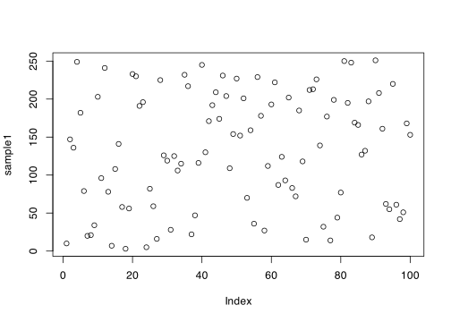
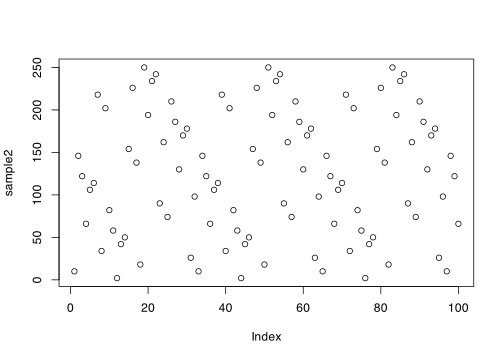

lcg <- function(n, modulus, mult, incr, seed) {
samples <- rep(0, n)
samples[1] <- seed
for (i in 1:(n - 1)) {
samples[i + 1] <- (mult * samples[i] + incr) %% modulus
}
return(samples)
}\[ \newcommand{\Exg}{\operatorname{\mathbb{E}}} \newcommand{\Ex}{\mathbb{E}} \newcommand{\Ind}{\mathbb{I}} \newcommand{\Var}{\operatorname{Var}} \newcommand{\Cov}{\operatorname{Cov}} \newcommand{\Corr}{\operatorname{Corr}} \newcommand{\ee}{\mathrm{e}} \]
11 LCGs
11.1 Definition and examples
Last lecture we introduced the idea of pseudorandom number generators (PRNGs), which are deterministic functions that produce a sequence of numbers that look for all practical purposes as if they are random.
We introduced the idea of a recurrence, where we have a function \(f\) and start with a seed \(x_1\). We then produce a sequence through the recurrence \(x_{i+1} = f(x_i)\). So \(x_2 = f(x_1)\), \(x_3 = f(x_2) = f(f(x_1))\), and so on.
We briefly mentioned a class of such PRNGs called linear congruential generators, or LCGs. An LCG generates integers between \(0\) and \(m-1\) using a recurrence function of the form \[ f(x) = (ax + c) \bmod m , \] so \[ x_{i+1} = (ax_i + c) \bmod m . \]
Here, “\(\mathrm{mod}\ m\)” means “modulo \(m\)”; that is, we are using modular arithmetic, where when we get to \(m - 1\) we wrap back to 0 and start again. (Modular arithmetic is sometimes called “clock arithmetic”, because hours of the day work modulo 12: for example, 3 hours after 11 o’clock is 2 o’clock, because \(11 + 3 = 14 \equiv 2 \bmod m\).)
In the LCG \(x_{i+1} = (ax_i + c) \bmod m\):
\(m\) is called the modulus,
\(a\) is called the multiplier,
\(c\) is called the increment,
\(x_1\), the starting point, is called the seed.
Example 11.1 Let us look at two simple LCGs with modulus \(m = 2^4 = 16\).
First, let \(a = 5\) be the multiplier, \(c = 3\) be the increment, and \(x_1 = 1\) be the seed. Then we have \[ \begin{align} x_2 &= (5x_1 + 3) \bmod 16 = (5\times 1 + 3) \bmod 16 = 8 \bmod 16 = 8 \\ x_3 &= (5x_2 + 3) \bmod 16 = (5\times 8 + 3) \bmod 16 = 43 \bmod 16 = 11 \\ x_4 &= (5x_3 + 3) \bmod 16 = (5\times 1 + 3) \bmod 16 = 43 \bmod 58 = 10 , \end{align} \] and so on. The sequence continues \((1, 8, 11, 10, 5, 12, 15, 14, 9, 0, \dots)\). This looks pretty much like a random sequence of numbers between 0 and 15 to me – I certainly don’t see any obvious pattern.
Second, let \(a = 3\) be the multiplier, \(c = 6\) be the increment, and \(x_1 = 1\) be the seed. Then we have \[ \begin{align} x_2 &= (3x_1 + 2) \bmod 16 = (3\times 1 + 6) \bmod 16 = 9 \bmod 16 = 9 \\ x_3 &= (3x_2 + 4) \bmod 16 = (3\times 9 + 6) \bmod 16 = 33 \bmod 16 = 1 . \end{align} \] But now, using \(x_3 = 1\) will give \(x_4 = 9\) again. And \(x_4 = 9\) will give \(x_5 = 1\) again. So the sequence will be \((1, 9, 1, 9, 1, 9, 1, \dots)\), with just 1 and 9 repeating for ever. This definitely doesn’t looks random!
The example illustrates that, while an LCG can provide a good sequence of pseudorandom numbers, we need to be careful with the parameters we choose.
Example 11.2 Of course, it doesn’t make much sense to run LCGs by hand – the whole purpose of LCGs is that they can produce lots of (pseudo)random numbers very fast. So we should run them on computers.
The following R code sets up a function for sampling \(n\) numbers from an LCG.
In the fourth line, %% is R’s “mod” operator.
Let’s look at two examples with modulus \(m = 2^8 = 256\).
First, let \(a = 13\) be the multiplier, \(c = 17\) be the increment, and \(x_1 = 10\) be the seed.
m <- 2^8
sample1 <- lcg(100, m, 13, 17, 10)
plot(sample1)
That looks like a pretty random collection of numbers to me.
Second, we stick with \(a = 13\) be the multiplier and \(x_1 = 10\) as the seed, be decrease the increment by 1 to \(c = 16\).
sample2 <- lcg(100, m, 13, 16, 10)
plot(sample2)
This doesn’t seem as good. We can see there’s some pattern where there are parallel downward sloping lines. And also there seems to be some sort of pattern within these downward sloping lines, sometimes with quite regularly-spaced points on those lines. And looking more closely, we can see that actually the pattern of numbers repeats exactly every 32 steps
which(sample2 == 10)[1] 1 33 65 97so we only ever see 32 of the possible 256 values. This doesn’t seem to look like a sequence of independent uniformly random points.
So again, it seems like LCG can provide a good sequence of pseudorandom numbers, but it seems quite sensitive to a good choice of the parameters.
Is these examples, we’ve usually taken \(m\) to be a power of 2. There are a few reasons for this:
We will want to divide each term in the sequence \(x_i\) by \(m\) to get a number between \([0,1]\). If our number will be stored as a \(b\)-bit number, then it is makes sense to have created \(b\) bits (for an integer between \(0\) and \(m = 2^{b} - 1\)) in the first place. This means every integer in \(\{0, 1, \dots, m-1\}\) corresponds to exactly one \(b\)-bit number. Further this makes the division by \(m = 2^b\) extremely simple: you simple add “0.” (zero point…) at the front of the number!
Modular arithmetic modulo a power of 2 is very simple for a computer. For a number in binary, the value modulo \(2^b\) is simply the last \(b\) bits of the number. So
10111001modulo \(2^4\) is simply1001, the last four bits.Having \(m = 2^b\) (or, more generally, having \(m\) being the product of lots of small prime factors) makes it easier to choose parameters such that the LCG is a good pseudorandom number generator … as we shall see in the next section.
11.2 Periods of LCGs
In an LCG, each number in the sequence depends only on the one before, since \(x_{i+1} = (ax_i + c) \bmod m\). This means if we ever get a single “repeat” in our sequence – that is, if we see a number we have seen at some point before – then the whole sequence from that point on will copy what came before.
For example, in the second part of Example 11.1, the sequence started \((1, 9, 1, \dots)\). As soon as we hit that repeat 1, we know we’re going to see that pattern \(1, 9\) repeated forever. We say that this LCG has “period” 2. More generally, the period of an LCG is the smallest \(k \geq 1\) such that \(x_{i+k} = x_i\) for some \(i\).
We would like our LCGs to have a big period. If an LCG has a small period, it will not look random, as we will just repeat the same small number of values over and over again.
The smallest possible period is 1. That would be an extraordinarily bad LCG, as it would just spit out the same number forever. The biggest possible period is \(m\). That is because there are only \(m\) possible values in \(\{0, 1, \dots, m-1\}\); so after \(m+1\) steps we must have had a repeat, by the pigeonhole principle. Having the maximum period \(m\) is also called having “full period”.
Generally, the only way to find the period of an LCG is to run it for a long time, and see how long it takes to start repeating. But, conveniently, there is a very easy way to tell if an LCG has the maximum possible period \(m\), thanks to a result of TE Hull and AR Dobell.
Theorem 11.1 (Hull–Dobell theorem) Consider the linear congruential generator \(x_{i+1} = (ax_i + c) \bmod m\). This LCG has period \(m\) if and only if the following three conditions hold:
\(m\) and \(c\) are coprime;
\(a - 1\) is divisible by all prime factors of \(m\);
if \(m\) is divisible by 4, then \(a - 1\) is divisible by 4.
If \(m = 2^b\) is a power of 2 (with \(b \geq 2\)), then the three conditions simplify to a particularly pleasant form:
\(c\) is odd;
\(a - 1\) is even;
\(a - 1\) is divisible by 4.
Of course, the third point on the list implies the second. So we only actually need to check two things:
\(c\) is odd
\(a\) is \(1 \bmod 4\) (that is, \(a\) is one more than a multiple of 4).
(We won’t prove the Hull–Dobell theorem here – it’s some pretty tricky number theory. But see Knuth, The Art of Computer Programming, Volume 2: Seminumerical algorithms, Subsubsection 3.2.1.2 if you really want a proof and have sufficient number theory background.)
Example 11.3 Let’s go back to the earlier examples, and see if they have full periods or not.
In the first LCG of Example 11.1, we had \(m = 2^4\), \(a = 5\) and \(c = 3\). Here, \(c\) is odd, and \(a = 4 + 1\) is \(1 \bmod 4\). This LCG fulfils both conditions, so it has the maximum possible period of 16.
In the second LCG of Example 11.1, we had \(m = 2^4\), \(a = 3\) and \(c = 6\). Here, \(c\) is even, and \(a\) is \(2 \bmod 4\). This LCG does not fulfil both the conditions – in fact, it fails them both – so it does not have the maximum possible period of 16. (We already saw that it in fact has period 2.)
In the first LCG of Example 11.2, we had \(m = 2^8\), \(a = 13\) and \(c = 17\). Here, \(c\) is odd, and \(a = 12 + 1\) is \(1 \bmod 4\). This LCG fulfils both conditions, so it has the maximum possible period of 256.
In the second LCG of Example 11.2, we had \(m = 2^8\), \(a = 13\) and \(c = 16\). Here, \(c\) is even, and \(a = 12 + 1\) is \(1 \bmod 4\). So although this LCG does fulfil the second condition, it does not fulfil the first, so it does not have the maximum possible period of 256. (We already saw that it in fact has period 32.)
It normally a good idea to make sure your LCG has full period – if it’s so easy to ensure, then why not? (That said, a very large but not-quite-maximum period may be good enough. For example, if an LCG with modulus \(2^{64}\) has a period of “only” \(2^{60}\), that might well be enough: one million samples a second for one thousand years is only \(2^{55}\) samples, so you’d never actually see a repeat.)
But merely having full period (and a large modulus) isn’t enough by itself to guarantee an LCG will make a good pseudorandom number generator. After all, the silly LCG \(x_{i+1} = x_i + 1\) has full period, but the sequence \[(0, 1, 2, 3, \dots, m-2, m-1, 0, 1, 2, \dots)\] will not look random.
11.3 Statistical testing
Before being used properly, any pseudorandom number generator is subjected to a barrage of statistical tests, to check if its output seems to “look random”. Alongside checking it has a very large period, the tester will want to check other statistical properties of randomness. Even the best PRNGs might not pass every single such test. See Voss, An Introduction to Statistical Computing, Subsection 1.1.2 for more (non-examinable) material on statistical tests for randomness.
LCGs were considered state-of-the-art until the late-90s or so. However, it was discovered that \(m\) needs be very big and the number of samples used fairly small in order to pass some of the more stringent statistical tests of randomness. For example, it’s suggested that \(n = 1\,000\,000\) (one million) samples from a full-period LCG with modulus \(m = 2^{64}\) might be the limit before it starts “not looking random enough”. In particular, an LCG with a large period may not actually see enough repeats – after all, random numbers will have the occasional one-off repeat, just by chance. Compared to other more modern methods (like R’s default, the Mersenne Twister, mentioned in the last lecture, discovered in 1997), an LCG requires quite a lot of computation for only a modest number of samples. So while LCGs are still admired for their simplicity and elegance, they have fallen out of favour for cutting-edge computational work.
Next time: We’ll use our pseudorandom uniform \([0,1]\) random numbers to make random numbers with other discrete or uniform distributions.
Summary:
Linear congruential generators are pseudorandom number generators based on the recurrence \(x_{n+1} = (ax_n + c) \bmod m\).
Any LCG will eventually repeat with periodic behaviour.
Suppose \(m\) is a power of 2. Then an LCG has full period \(m\) if and only if \(c\) is odd and \(a = 1 \bmod 4\).
You should now be able to answer all questions on Problem Sheet 2. Your answers will be discussed in the problems class on Thursday 31 October.
Read more: Voss, An Introduction to Statistical Computing, Subsections 1.1.1 and 1.1.2.